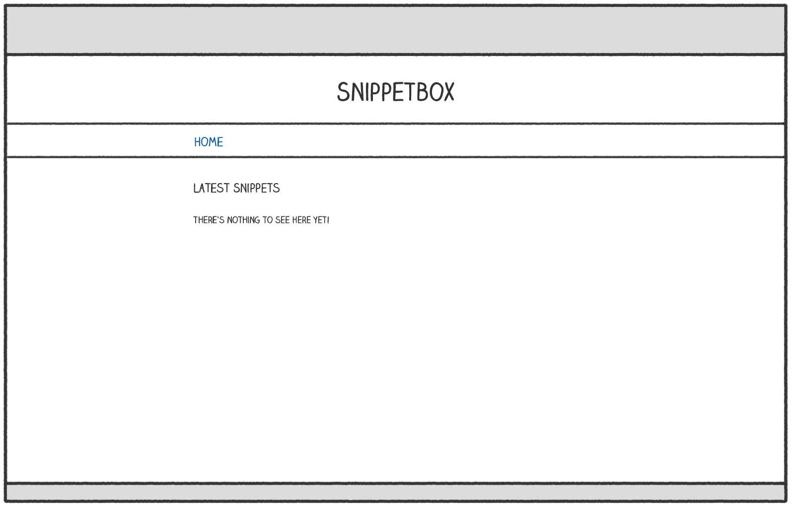

HTML templating and inheritance
Let’s inject a bit of life into the project and develop a proper home page for our Snippetbox web application. Over the next couple of chapters we’ll work towards creating a page which looks like this:

Let’s start by creating a template file at ui/html/pages/home.tmpl which contains the HTML content for our home page. Like so:
$ cd $HOME/code/snippetbox $ mkdir ui/html/pages $ touch ui/html/pages/home.tmpl
<!doctype html> <html lang='en'> <head> <meta charset='utf-8'> <title>Home - Snippetbox</title> </head> <body> <header> <h1><a href='/'>Snippetbox</a></h1> </header> <main> <h2>Latest Snippets</h2> <p>There's nothing to see here yet!</p> </main> <footer>Powered by <a href='https://golang.org/'>Go</a></footer> </body> </html>
Now that we’ve created a template file containing the HTML markup for the home page, the next question is how do we get our home handler to render it?
For this we need to use Go’s html/template package, which provides a family of functions for safely parsing and rendering HTML templates. We can use the functions in this package to parse the template file and then execute the template.
I’ll demonstrate. Open the cmd/web/handlers.go file and add the following code:
package main import ( "fmt" "html/template" // New import "log" // New import "net/http" "strconv" ) func home(w http.ResponseWriter, r *http.Request) { if r.URL.Path != "/" { http.NotFound(w, r) return } // Use the template.ParseFiles() function to read the template file into a // template set. If there's an error, we log the detailed error message and use // the http.Error() function to send a generic 500 Internal Server Error // response to the user. ts, err := template.ParseFiles("./ui/html/pages/home.tmpl") if err != nil { log.Print(err.Error()) http.Error(w, "Internal Server Error", 500) return } // We then use the Execute() method on the template set to write the // template content as the response body. The last parameter to Execute() // represents any dynamic data that we want to pass in, which for now we'll // leave as nil. err = ts.Execute(w, nil) if err != nil { log.Print(err.Error()) http.Error(w, "Internal Server Error", 500) } } ...
It’s important to point out that the file path that you pass to the template.ParseFiles() function must either be relative to your current working directory, or an absolute path. In the code above I’ve made the path relative to the root of the project directory.
So, with that said, make sure you’re in the root of your project directory and restart the application:
$ cd $HOME/code/snippetbox $ go run ./cmd/web 2022/01/29 12:06:02 Starting server on :4000
Then open http://localhost:4000 in your web browser. You should find that the HTML homepage is shaping up nicely.
Template composition
As we add more pages to this web application there will be some shared, boilerplate, HTML markup that we want to include on every page — like the header, navigation and metadata inside the <head> HTML element.
To save us typing and prevent duplication, it’s a good idea to create a base (or master) template which contains this shared content, which we can then compose with the page-specific markup for the individual pages.
Go ahead and create a new ui/html/base.tmpl file…
$ touch ui/html/base.tmpl
And add the following markup (which we want to appear on every page):
{{define "base"}}
<!doctype html>
<html lang='en'>
<head>
<meta charset='utf-8'>
<title>{{template "title" .}} - Snippetbox</title>
</head>
<body>
<header>
<h1><a href='/'>Snippetbox</a></h1>
</header>
<main>
{{template "main" .}}
</main>
<footer>Powered by <a href='https://golang.org/'>Go</a></footer>
</body>
</html>
{{end}}
Hopefully this feels familiar if you’ve used templating in other languages before. It’s essentially just regular HTML with some extra actions in double curly braces.
Here we’re using the {{define "base"}}...{{end}} action to define a distinct named template called base, which contains the content we want to appear on every page.
Inside this we use the {{template "title" .}} and {{template "main" .}} actions to denote that we want to invoke other named templates (called title and main) at a particular point in the HTML.
Now let’s go back to the ui/html/pages/home.tmpl file and update it to define title and main named templates containing the specific content for the home page.
{{define "title"}}Home{{end}}
{{define "main"}}
<h2>Latest Snippets</h2>
<p>There's nothing to see here yet!</p>
{{end}}
Once that’s done, the next step is to update the code in your home handler so that it parses both template files, like so:
package main ... func home(w http.ResponseWriter, r *http.Request) { if r.URL.Path != "/" { http.NotFound(w, r) return } // Initialize a slice containing the paths to the two files. It's important // to note that the file containing our base template must be the *first* // file in the slice. files := []string{ "./ui/html/base.tmpl", "./ui/html/pages/home.tmpl", } // Use the template.ParseFiles() function to read the files and store the // templates in a template set. Notice that we can pass the slice of file // paths as a variadic parameter? ts, err := template.ParseFiles(files...) if err != nil { log.Print(err.Error()) http.Error(w, "Internal Server Error", 500) return } // Use the ExecuteTemplate() method to write the content of the "base" // template as the response body. err = ts.ExecuteTemplate(w, "base", nil) if err != nil { log.Print(err.Error()) http.Error(w, "Internal Server Error", 500) } } ...
So now, instead of containing HTML directly, our template set contains 3 named templates — base, title and main. We use the ExecuteTemplate() method to tell Go that we specifically want to respond using the content of the base template (which in turn invokes our title and main templates).
Feel free to restart the server and give this a try. You should find that it renders the same output as before (although there will be some extra whitespace in the HTML source where the actions are).
Embedding partials
For some applications you might want to break out certain bits of HTML into partials that can be reused in different pages or layouts. To illustrate, let’s create a partial containing the primary navigation bar for our web application.
Create a new ui/html/partials/nav.tmpl file containing a named template called "nav", like so:
$ mkdir ui/html/partials $ touch ui/html/partials/nav.tmpl
{{define "nav"}}
<nav>
<a href='/'>Home</a>
</nav>
{{end}}
Then update the base template so that it invokes the navigation partial using the {{template "nav" .}} action:
{{define "base"}}
<!doctype html>
<html lang='en'>
<head>
<meta charset='utf-8'>
<title>{{template "title" .}} - Snippetbox</title>
</head>
<body>
<header>
<h1><a href='/'>Snippetbox</a></h1>
</header>
<!-- Invoke the navigation template -->
{{template "nav" .}}
<main>
{{template "main" .}}
</main>
<footer>Powered by <a href='https://golang.org/'>Go</a></footer>
</body>
</html>
{{end}}
Finally, we need to update the home handler to include the new ui/html/partials/nav.tmpl file when parsing the template files:
package main ... func home(w http.ResponseWriter, r *http.Request) { if r.URL.Path != "/" { http.NotFound(w, r) return } // Include the navigation partial in the template files. files := []string{ "./ui/html/base.tmpl", "./ui/html/partials/nav.tmpl", "./ui/html/pages/home.tmpl", } ts, err := template.ParseFiles(files...) if err != nil { log.Print(err.Error()) http.Error(w, "Internal Server Error", 500) return } err = ts.ExecuteTemplate(w, "base", nil) if err != nil { log.Print(err.Error()) http.Error(w, "Internal Server Error", 500) } } ...
Once you restart the server, the base template should now invoke the nav template and your home page should look like this:
Additional information
The block action
In the code above we’ve used the {{template}} action to invoke one template from another. But Go also provides a {{block}}...{{end}} action which you can use instead. This acts like the {{template}} action, except it allows you to specify some default content if the template being invoked doesn’t exist in the current template set.
In the context of a web application, this is useful when you want to provide some default content (such as a sidebar) which individual pages can override on a case-by-case basis if they need to.
Syntactically you use it like this:
{{define "base"}}
<h1>An example template</h1>
{{block "sidebar" .}}
<p>My default sidebar content</p>
{{end}}
{{end}}
But — if you want — you don’t need to include any default content between the {{block}} and {{end}} actions. In that case, the invoked template acts like it’s ‘optional’. If the template exists in the template set, then it will be rendered. But if it doesn’t, then nothing will be displayed.
Embedding files
Go also provides the embed package which makes it possible to embed files into your Go program itself rather than reading them from disk.
For now, reading our template files from disk works fine and it’s conceptually simpler than using the embed package, but we’ll revisit this and explain how to use the embed functionality as an alternative later in the book.